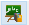
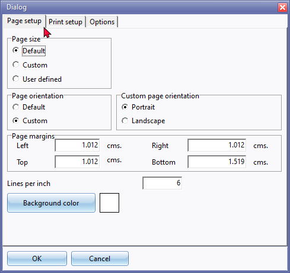
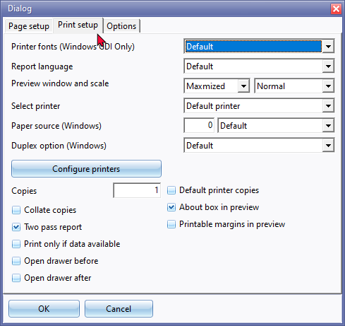
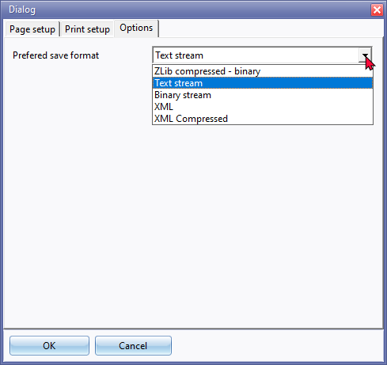

Reportman reports - Printer setup
By default, the page settings for all document layout files and reports are set to the A4 page layout size.
The Page printer and page settings (page size, margins, etc.) for specific layout files and reports may be set and configured and attached to specific printers.
The printer settings for layout files and reports may be set and configured from the following options:
- Printer icon on the Reports ribbon or Setup → Printer menu on the Setup ribbon. Printer settings.
- Reports → Report designer (Print preview button). Page setup and Printer settings.
This is the change where we used to have the ability to setup printers for all reports
Now its loaded from reportman
Need to configure printers in reportman and attach layout to those printers
i.e. printer 1 = document A4 printer and printer 2 = pos printer
Set layout of pos to printer2 and make sure the printer is correctly set in reportman printer setup.
In the screen second tab to set the default printer of a layout file and there is also a button configure printers with is device or user specific.
they can then set there printers accordingly to the pc they logon to - i.e. printer 1 is the same network printer for everyone, but the pos printer is specific to the point its connected to.

Printer settings
Page setup
To do a Page setup for reports:
- If a layout file or a report is sent to screen (in the Report preview screen), click on the  Show report print setup icon or press the F11 key.
- On the "Dialog" screen, click on the Page setup button, if not already displayed.

- You may change the default Settings, if necessary:
- Page size -
- Default is the standard option.
- Custom radio button - You may select or standard page sizes from a list.
- User defined radio button - You may set the width and height of the paper size. This is important and may need to be specified for dot-matrix printers.
- Page orientation - The Default option is Portrait. You may click on the Custom radio button the set the Custom page orientation to Landscape.
- Page margins - You may specify the left and right margins as well as the top and bottom margins.
- Lines per inch - The default option is 6 lines per inch.
- Background color - The default colour is white. This is optional.
- Once finished, you may click on the Print setup tab.
Print setup
On this tab, you may set the default printer of a layout file or a report and there is also a button configure printers with is device or user specific. For example, you may then set there printers accordingly to the pc users logon to - i.e. printer 1 is the same network printer for everyone, but the pos printer is specific to the point its connected to.

- On this tab, you may set the default printer of a layout file or a report and there is also a button to configure printers which is device or user specific. For example, you may then set there printers accordingly to the pc users logon to - i.e. printer 1 is the same network printer for everyone, but the pos printer is specific to the point its connected to.
- Printer Fonts (Windows GDI Only) - The Microsoft Windows graphics device interface (GDI) enables reportman to use graphics and formatted text on both the screen and the printer.
|
|
Windows-based applications do not access the graphics hardware directly. Instead, GDI interacts with device drivers on behalf of applications. http://msdn.microsoft.com/en-us/library/windows/desktop/dd145203%28v=vs.85%29.aspx |
- Report language - Default will use the Operating system's Regional and Language settings. You may select any of the available languages from the list as the language for reportman.
|
|
All reports are already translatable via the Language files in osFinancials (Switch language (Start ribbon) or as customised in Setup → Tools → Customise language). Languages may also be set in the Setup → Access control - Standard security tab System lang field for the entire Set of Books and the Language field for users). |

- Preview window and scale -
- Print preview - Select Normal (default) or Maximised.
- Scale - Select Wide (default), Normal or Page.
- Select printer - Select one of the following printers; Default, Reporting printer, Reporting printer 2, Ticket printer, Ticket printer 2, Graphics printer, Character based printer, User printer 1 - 9, Plain text printer or Full plain text printer.
- Paper source (Windows) - You may select Default (default option), First source, Lower source, Middle source, Manual envelope source, Automatic source, Tractor source, Small format source, Large capacity source, Cassette source or Form source.
- Duplex option (Windows) - Select this option to print on both sides of a page (duplex printing). Note Some printers supports duplex printing; some printers supports automatic duplex printing; and some printers do not support duplex printing at all.
|
|
To check whether your printer supports duplex printing, please consult the printer manual, or check the printer's properties (Properties in the Print dialog box). |
- Configure printers button - The Dialog window will open on which you may: -
- Select one of the following printers; Default printer, Reporting printer, Reporting printer 2, Ticket printer, Ticket printer 2, Graphics printer, Character based printer, User printer 1 - 9, Plain text printer or Full plain text printer.
- Printer Fonts (Windows GDI Only) - The Microsoft Windows graphics device interface (GDI).
- Text driver only - You may select a print driver from the list (i.e. "PLAIN, EPSON, EPSON-MASTER, EPSON-ESCP, EPSON-ESCPQ, IBMPROPRINTER, EPSONTMU210, EPSONTMU210CUT, EPSONTM88II, EPSONTM88IICUT, HP-PCL, VT100" of "PLAINFULL".
|
|
Oem (Original Equipment Manufacturers) tick to use the drivers from the hardware manufacturers. |
- Position adjustment - Optional - You may enter a value for the left and top of the page.
- Operations after print -
- Cut paper -
- Open drawer -
- Configuration file - Printer configuration file - Report Manager Designer will use a Printer configuration file, only used in printer selection.
|
|
Configuration file options - Location:
|
|
|
This configuration file will be searched as Documents & Settings\Local Config\All Users\reporman.ini, if not found it will create or use Documents & Settings\Local Config\YourUserName\reporman.ini |
- Copies - By default the number of copies printed, is 1. You may enter the number of copies to be printed.
- Default printer copies - If this option is selected, the Copies will be disabled. The number of the copies as set in the printer settings (Properties or Preferences) will be used.
- Collate copies - This will determine how the printed pages of a layout file or report (which contains multiple pages) is sorted when more than one copy of the report or layout file is printed.
|
|
For example, if you print multiple copies (three copies) of a report or document layout file that is four pages long, it will print the pages as follows:
|

- Two pass report - This setting allows you to preview the first page before all the pages are calculated (e.g. page 1/2, etc.). This is the default setting implemented in reports and document layout files which supports multi-page and subreports in reports and document layout files. This controls the print speed and memory usage (when printing, pages printed are released from memory).
|
|
This two pass report setting must be selected (ticked) for both, "PAGECOUNT" and/or "SkipToPage" settings. |

- Print only if data available - By default this option is not selected (ticked). If no data is available to print, an error message is displayed:
"No data available to print"
|
|
When some reports, are printed, and there are no data, it will still print the report without any data. You may then need to re-run the report and select the correct parameters on the report options. |
- Open drawer before / Open drawer after - If a drawer is connected and configured correctly to your system and is also set and configured to the standard Point-of-Sales (Setup → Setup → Point-of-Sales - Peripherals - Drawer tab) or other Plugins (HorecaPOS / RetailPOS), etc., you may select to open the drawer before or after printing the invoice, etc.
- About box in preview - Not implemented.
- Printable margins in preview - Not implemented.
- Click on the Options tab.
Options

Preferred save format - The default option is "Text stream".
To be advised.